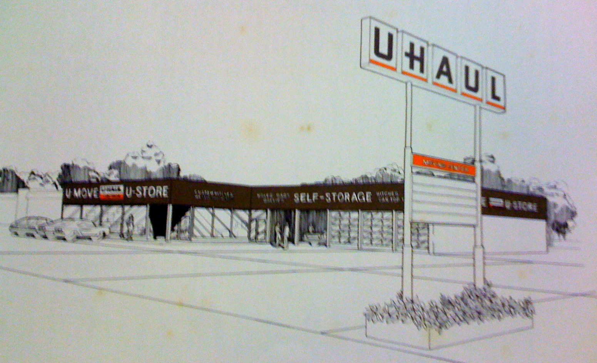

David Crowley
Designer, coder, researcher & human enthusiast
Bay Area, California
Featured
 HP Sprout |
U-Haul |
Ixonos
- Helped design and develop the interface for a new generation of computing.
- Designed and developed smart office projects.
- Developed the interface for a streaming television app.
- Prototyped VR and AR apps.
- Conducted user tests, including voice feedback and driving simulation.
- Helped run the IXD Conference.
Seabourne
- Developed sites and apps.
- Automated tests using Python and Selenium.
- Recorded tutorials for developers.
- Developed jQuery plugins.
U-Haul
- Researched customers and employees using location visits, user shadowing, customer calls, usability tests, user interviews and session logs.
- Designed and developed sites, intranets, apps, point of sale terminals and kiosks.